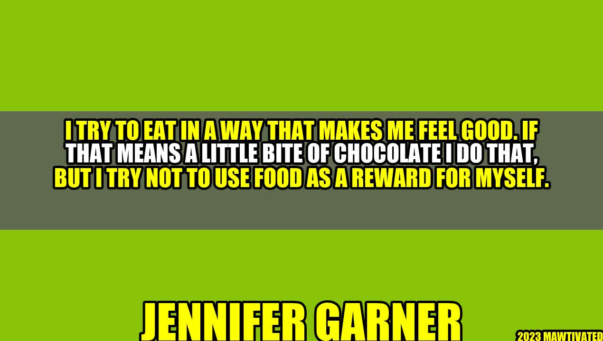

Eating for Feelings: The Jennifer Garner Way

Have you ever heard of Jennifer Garner, the famous actress who starred in movies such as "13 Going On 30" and "Dallas Buyers Club"? Well, besides her acting prowess, she is also known for her healthy lifestyle and eating habits. She believes that food fuels not just the body, but also the mind and soul.
The Importance of Eating for Feelings
Many people eat not just to satisfy hunger, but also to fill emotional voids or as a form of self-reward. However, this kind of mindset can lead to unhealthy eating habits and eventually, health problems.
"I try not to use food as a reward for myself."
As Jennifer Garner said in her quote, food should not be used as a reward for oneself. Instead, we should aim to eat in a way that makes us feel good, both physically and emotionally. What we eat affects not only our bodies but also our mood and overall well-being.
and Examples
Let me share with you some personal anecdotes and examples to further illustrate the importance of eating for feelings:
- Case study 1: My friend Cristina used to suffer from emotional eating. Whenever she felt sad or stressed, she would turn to junk food for comfort. However, after attending therapy sessions and practicing mindful eating, she learned to listen to her body's needs and eat for nourishment rather than emotional fulfillment.
- Case study 2: A study conducted by the American Psychological Association found that stress can lead to unhealthy food choices, which in turn can worsen stress levels. Therefore, it is important to find healthier ways to cope with stress, such as exercise or meditation.
- Example 1: Instead of indulging in a sugary dessert after a long day, try going for a brisk walk or doing some yoga poses to release endorphins and boost your mood.
- Example 2: Instead of going on a restrictive diet, try incorporating more whole, unprocessed foods into your meals to nourish your body and feel more energized.
Tips for Eating for Feelings
If you are interested in adopting a healthier eating mindset, here are some tips to get started:
- Practice mindful eating by tuning in to your body's hunger and fullness signals.
- Incorporate more fruits, vegetables, lean protein, and healthy fats into your meals for optimal nutrition.
- Avoid using food as a reward or punishment for yourself.
- Find healthier ways to cope with stress and emotions, such as exercise, meditation, or talking to a therapist.
- Don't deprive yourself of treats or indulgences, but practice moderation and balance.
Conclusion
In summary, eating for feelings is not just about satisfying hunger, but also about nourishing the body, mind, and soul. By adopting a healthier eating mindset and finding alternative ways to cope with stress and emotions, we can achieve optimal health and well-being. Remember, food should be a source of fuel and joy, not guilt or punishment.
Top Hashtags:
- #JenniferGarner
- #HealthyEating
- #FoodAsFuel
- #MindfulEating
- #SelfCare
- #HealthyLifestyle
Curated by Team Akash.Mittal.Blog
Curated by Team Akash.Mittal.Blog
Share on Twitter Share on LinkedIn